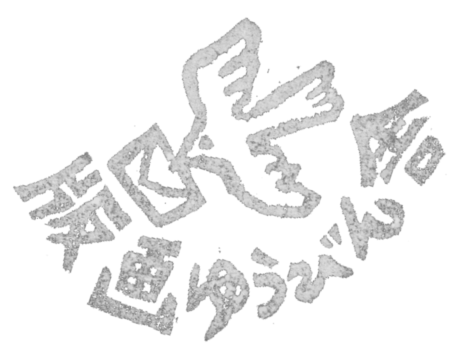

森からの発想
Idea from the forest
森からの発想 - Idea from the forest
私たちが最もこだわっていることは、「東京の森」の木を使うこと。
それは建築用の材として先人に植えられ、育成の工程で間引かれる「間伐材」です。人の手で育てられた森は、人の手で間伐を行うことで、適度な光が林床に届き、生態系が豊かになります。
人の関わりが急速に森から離れてしまったことで、全国各地の森は、荒廃が進んでいます。間伐材を額縁のために使うことは、木の命を断つことに違いありませんが、それは森との対話であり、新しい世代の命を育むことに結び付くのです。
この作品に関わる技術の多くは、私たちが実際に森へ入って活動し、森から授かったインスピレーションを元にして生まれました。
-
Our most important mission is to use wood in the forest of Tokyo.
It is thinned wood planted in the forerunner as a building material and thinned out during the breeding process. If people thinning, the light reaches the forest floor, the forest planted by humans will enrich the ecosystem.
The forest has its ecosystem broken because human activity has rapidly left the forest. Using wood for the frame must break the tree's life, but it is an interaction with the forest, which leads to the development of the new generation's life.
Many of the ideas of this work were born from the inspiration that we got through working in the forest.